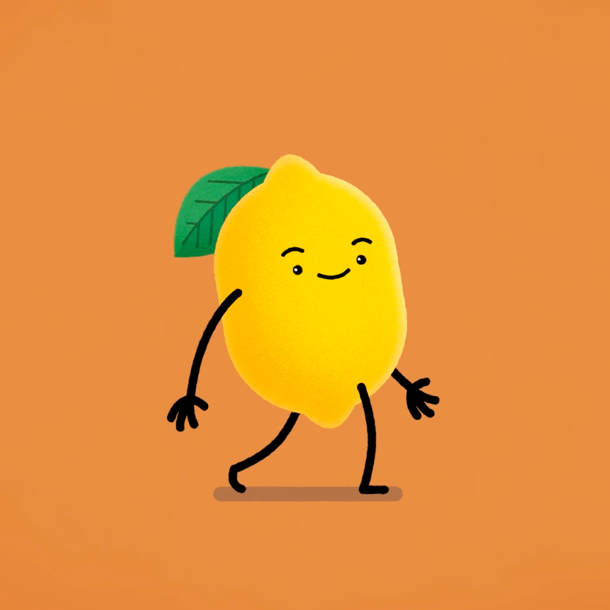
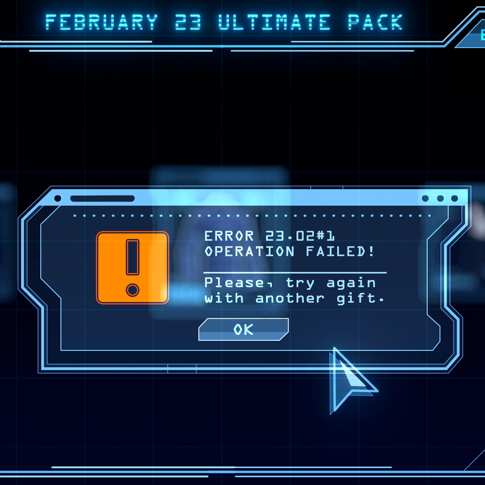
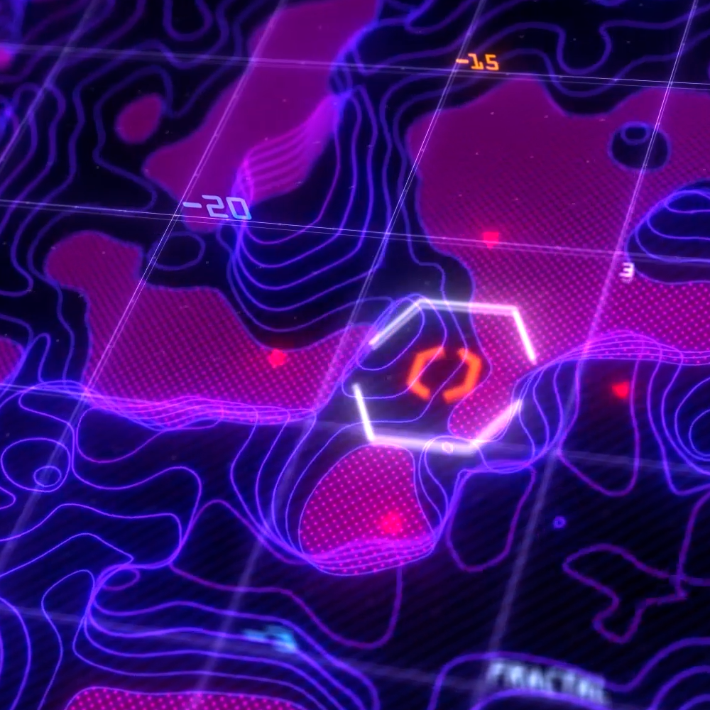

Something about who I am actually:
My name is Alina, I am from Moscow. Meant to be an architect, I always loved drawing and animating stuff; my first experience in animation was stop-motion fooling around with Lego and modeling clay figures. At my late school years I suddenly found what motion design actually is and fell in love immediately.
I still consider myself as a junior since I haven't found any specific sphere for me yet. Interested in a lil-bit of everything, I love to work with absolutely different projects in different software. For example:
|  |
Flat graphics? You can count on me! |
|
2D character animation? Love that! |
|  |
Futuristic interfaces? Sounds like a great task for me! |
|
NPR 3D? Let's do it! |
|  |
Cyberpunk? Everyone loves it, so do I! |
Wanna see more of my works? Discover all my social networks at [CONTACTS] page.